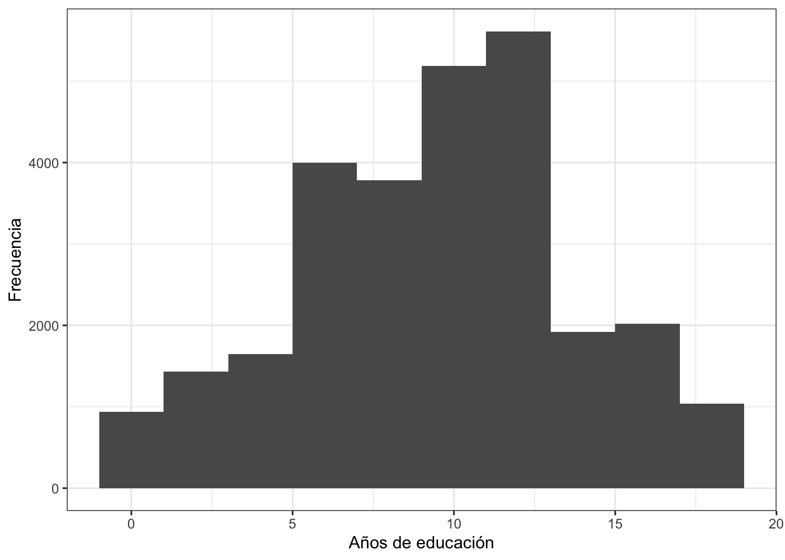

Introducción
En este documento veremos aspectos básicos de cómo describir una variable numérica. Para eso, vamos a seguir usando el último informe regional “El pulso de la democracia”, disponible aquí, donde se presentan los principales hallazgos de la ronda 2018/19 del Barómetro de las Américas. Una de las secciones de este informe, reporta los datos sobre redes sociales y actitudes políticas. En esta sección, se presentan datos sobre el uso de internet y el uso de redes sociales, en general, por país y por ciertas características sociodemográficas.
Sobre la base de datos
Los datos que vamos a usar deben citarse de la siguiente manera: Fuente: Barómetro de las Américas por el Proyecto de Opinión Pública de América Latina (LAPOP), wwww.LapopSurveys.org. Pueden descargar los datos de manera libre aquí. En este enlace, se pueden registrar o entrar como “Free User”. En el buscador, se puede ingresar el texto “2018”. Ahí se tendrá acceso a la base de datos completa “2018 LAPOP AmericasBarometer Merge_v1.0.dta” en versión para STATA. Se descarga la base de datos en formato zip, la que se descomprime en formato .dta. Una vez descargada y guardada en el directorio de trabajo, se tiene que leer la base de datos como un objeto dataframe en R. En este documento se carga una base de datos recortada. Esta base de datos se encuentra alojada en el repositorio “materials_edu” de la cuenta de LAPOP en GitHub. Mediante la librería rio y el comando import se puede importar esta base de datos desde este repositorio. Además, se seleccionan los datos de países con códigos menores o iguales a 35, es decir, se elimina las observaciones de Estados Unidos y Canadá.
library(rio)
lapop18 <- import("https://raw.github.com/lapop-central/materials_edu/main/LAPOP_AB_Merge_2018_v1.0.sav")
lapop18 <- subset(lapop18, pais<=35)
Descriptivos para una variable numérica
En la tabla 3.2 del reporte “El pulso de la democracia” se presentan los promedios generales de las variables edad (“q2” en la base de datos) y años de estudio (“ed” en la base de datos) para la población general. Se usa el comando mean para calcular el promedio y se usa na.rm=T debido a que estas variables cuentan con valores perdidos.
mean(lapop18$q2, na.rm=T)
## [1] 39.99204
mean(lapop18$ed, na.rm=T)
## [1] 9.934748
En la sección donde trabajamos con variables cualitativas (o de factor, en el lenguaje de R), vimos que se podía describir las variables “hombre” y “urbano” definiendo estas variables como factor, etiquetándolas y haciendo una tabla de frecuencias de estas variables. Otra manera de encontrar el porcentaje de personas que son hombres o que viven en el área urbana es trabajar con estas variables, pero no definirlas como factor. Cuando se crean las variables, ambas son definidas por defecto como numéricas. En este caso, además se ser numéricas, son variables de tipo dummy, es decir con valores 0 y 1. En el caso de la variable “hombre” se ha definido 0=Mujer y 1=Hombre; y en el caso de la variable “urbano” se ha definido 0=Rural y 1=Urbano. Es una buena práctica nombrar a la variable dummy con un nombre que refiere a la categoría 1. Con variables dummy, cuando se calcula el promedio, el resultado es el mismo que el porcentaje de la categoría 1. Entonces, si se calcula mean(lapop$hombre, na.rm=T), esta operación nos arroja el porcentaje (de 0 a 1) de la categoría 1, es decir de hombres. Se multiplica por 100 para ponerlo en formato de 0 a 100.
lapop18$hombre <- 2-lapop18$q1
lapop18$urban <- 2-lapop18$ur
mean(lapop18$hombre, na.rm=T)*100
## [1] 49.74846
mean(lapop18$urban, na.rm=T)*100
## [1] 71.15398
Estos son los datos que se presentan en la primera columna de resultados de la población general, excepto para la variable riqueza (“quintall”) que no está disponible en esta versión recortada de la base de datos. Aquí se puede incluir algunas gráficas básicas, por ejemplo, usando el comando hist se puede reproducir el histograma de la variable “años de educación” (ed).
hist(lapop18$ed)

Este mismo gráfico se puede reproducir usando el comando ggplot. Con este comando se tiene más flexibilidad con las opciones gráficas. En primer lugar, se define el dataframe que se usará y la variable “ed” en el eje X. Luego con la especificación geom_histogram() se define usar un histograma. Se define el ancho de la barra del histograma con banwidth=2. Finalmente, este código permite etiquetar el eje X e Y e incluir un tema en blanco y negro, con theme_bw().
library(ggplot2)
ggplot(lapop18, aes(x=ed))+
geom_histogram(binwidth = 2)+
xlab("Años de educación")+
ylab("Frecuencia")+
theme_bw()

Descriptivos de una variable numérica
Otra manera de describir una variable numérica, descripción que incluye la media, es usando el comando summary. Este comando reporta los estadísticos descriptivos más usados para una variable numérica: mínimo, máximo, cuartiles, media y mediana. Todos estos estadísticos permiten una comparación mejor entre ambos grupos, de usuarios y no usuarios de Facebook. Dentro de este comando se puede incluir la especificación digits=3 para redondear los resultados, lo que evita tener que usar round, por ejemplo.
summary(lapop18$ed[lapop18$fb_user==0], na.rm=T, digits=3)
## Min. 1st Qu. Median Mean 3rd Qu. Max. NA's
## 0.00 5.00 8.00 8.06 11.00 18.00 1374
summary(lapop18$ed[lapop18$fb_user==1], na.rm=T, digits=3)
## Min. 1st Qu. Median Mean 3rd Qu. Max. NA's
## 0.0 9.0 12.0 11.4 14.0 18.0 1240
Sin embargo, el comando summary no brinda un estadística importante como la desviación estándar, una medida de dispersión o heterogeneidad. Para poder tener los estadísticos anteriores y que se incluya la desviación estándar, entre otras medidas adicionales, se puede usar el comando describeBy, que es parte de la librería psych. Este comando pide la variable a describir (“ed”) y la variable que forma los grupos (“fb_user”) y brinda la media, la desviación estándar, la mediana, la media recortada, la desviación absoluta de la mediana, el mínimo y máximo.
library(psych)
describeBy(lapop18$ed, lapop18$fb_user)
##
## Descriptive statistics by group
## group: 0
## vars n mean sd median trimmed mad min max range skew kurtosis se
## X1 1 11540 8.06 4.3 8 7.99 4.45 0 18 18 0.13 -0.52 0.04
## ------------------------------------------------------------
## group: 1
## vars n mean sd median trimmed mad min max range skew kurtosis se
## X1 1 14998 11.45 3.59 12 11.52 2.97 0 18 18 -0.24 0 0.03
Esta misma información se puede obtener usando el modo de códigos del tidyverse (con el operador pype %>%) y se puede guardar en una tabla. Esta tabla puede guardar los datos de la edad promedio para los usuarios y no usuarios de Whatsapp y además la desviación estándar de cada grupo. En primer lugar definimos con qué dataframe se trabaja. Luego, se indica que no se usen internamente los valores perdidos de la variable usuarios de Whatsapp con filter(!is.na(wa_user)). A continuación se indica que se va a trabajar en grupos de la variable usuarios de Whatsapp con group_by(wa_user). Finalmente, se indica que en cada grupo se calculará la media y la desviación estándar, con summarise.
library(dplyr)
whatxedad <- lapop18 %>%
filter(!is.na(wa_user)) %>%
group_by(wa_user) %>%
summarise(promedio = mean(q2, na.rm=T), sd = sd(q2, na.rm=T))
whatxedad
Gráficos descriptivos por grupos
El reporte no lo muestra, pero se pueden presentar gráficos para cada grupo para facilitar la comparación de una variable. Para hacer estos gráficos comparativos por grupo, vamos a seguir usando el tidyverse. Igual que en la tabla anterior, se define el dataframe y se indica que no se tome en cuenta los valores perdidos de la variable “wa_user”. Luego, se indica que se haga un gráfico, con ggplot que tenga la variable “q2” en el eje X. Se define que este gráfico sea un histograma con geom_histogram(). Una novedad es que, con la especificación facet_wrap(~wa_user) se puede indicar que se hagan gráficos por cada grupo de esa variable. Finalmente, se etiquetan los ejes.
lapop18 %>%
filter(!is.na(wa_user)) %>%
ggplot(aes(x=q2))+
geom_histogram()+
facet_wrap(~wa_user)+
xlab("Edad")+
ylab("Frecuencia")

Este gráfico, sin embargo, muestra los valores 0 y 1 de la variable “wa_user” en el encabezado de ambos gráficos. Esto es debido a que esta variable, cuando se creó, se definió por defecto como numérica. Para que aparezcan las etiquetas de la variable, se tiene que transformar “wa_user” en factor y etiquetarla.
lapop18$wa_user = as.factor(lapop18$wa_user)
levels(lapop18$wa_user) <- c("No usuario", "Usuario")
Otra forma de comparar la distribución de edad por grupos de usuarios o no usuarios de Whatsapp es mediante un gráfico de cajas o boxplot. Con el comando boxplot se puede hacer estos gráficos. El comando pide primero la variable en el eje Y, luego la variable que define los grupos y el dataframe. Se puede etiquetar el eje X y Y con los nombres de las variables.
boxplot(q2 ~ wa_user, data=lapop18, xlab ="Usuario de Whatsapp", ylab="Edad")

Resumen
En este documento se ha trabajado con variable numéricas, como edad o años de estudio. Se ha calculado estadísticos descriptivos, como la media o la desviación estándar para toda la población o por grupos. Finalmente, se ha presentado formas de graficar estas variables, mediante histogramas o boxplots.
LS0tCnRpdGxlOiAiRXN0YWTDrXN0aWNhIGRlc2NyaXB0aXZhIHVzYW5kbyBlbCBCYXLDs21ldHJvIGRlIGxhcyBBbcOpcmljYXMgKDMpIgpvdXRwdXQ6CiAgaHRtbF9kb2N1bWVudDoKICAgIHRvYzogdHJ1ZQogICAgdG9jX2Zsb2F0OiB0cnVlCiAgICBjb2xsYXBzZWQ6IGZhbHNlCiAgICBudW1iZXJfc2VjdGlvbnM6IGZhbHNlCiAgICB0b2NfZGVwdGg6IDEKICAgIGNvZGVfZG93bmxvYWQ6IHRydWUKICAgIHRoZW1lOiBmbGF0bHkKICAgIGRmX3ByaW50OiBwYWdlZAogICAgc2VsZl9jb250YWluZWQ6IG5vCiAgICBrZWVwX21kOiB5ZXMKICAgICNjb2RlX2ZvbGRpbmc6IGhpZGUKZWRpdG9yX29wdGlvbnM6IAogIG1hcmtkb3duOiAKICAgIHdyYXA6IHNlbnRlbmNlCi0tLQoKYGBge3Igc2V0dXAsIGluY2x1ZGU9RkFMU0V9CmtuaXRyOjpvcHRzX2NodW5rJHNldChtZXNzYWdlPUZBTFNFLHdhcm5pbmc9RkFMU0UsIGNhY2hlPVRSVUUpCmBgYAoKYGBge2NzcyBjb2xvciwgZWNobz1GQUxTRX0KLmNvbHVtbnMge2Rpc3BsYXk6IGZsZXg7fQpoMSB7Y29sb3I6ICMzMzY2Q0M7fQpgYGAKCiMgSW50cm9kdWNjacOzbgoKRW4gZXN0ZSBkb2N1bWVudG8gdmVyZW1vcyBhc3BlY3RvcyBiw6FzaWNvcyBkZSBjw7NtbyBkZXNjcmliaXIgdW5hIHZhcmlhYmxlIG51bcOpcmljYS4KUGFyYSBlc28sIHZhbW9zIGEgc2VndWlyIHVzYW5kbyBlbCDDumx0aW1vIGluZm9ybWUgcmVnaW9uYWwgIkVsIHB1bHNvIGRlIGxhIGRlbW9jcmFjaWEiLCBkaXNwb25pYmxlIFthcXXDrV0oaHR0cHM6Ly93d3cudmFuZGVyYmlsdC5lZHUvbGFwb3AvYWIyMDE4LzIwMTgtMTlfQW1lcmljYXNCYXJvbWV0ZXJfUmVnaW9uYWxfUmVwb3J0X1NwYW5pc2hfV18wMy4yNy4yMC5wZGYpLCBkb25kZSBzZSBwcmVzZW50YW4gbG9zIHByaW5jaXBhbGVzIGhhbGxhemdvcyBkZSBsYSByb25kYSAyMDE4LzE5IGRlbCBCYXLDs21ldHJvIGRlIGxhcyBBbcOpcmljYXMuClVuYSBkZSBsYXMgc2VjY2lvbmVzIGRlIGVzdGUgaW5mb3JtZSwgcmVwb3J0YSBsb3MgZGF0b3Mgc29icmUgcmVkZXMgc29jaWFsZXMgeSBhY3RpdHVkZXMgcG9sw610aWNhcy4KRW4gZXN0YSBzZWNjacOzbiwgc2UgcHJlc2VudGFuIGRhdG9zIHNvYnJlIGVsIHVzbyBkZSBpbnRlcm5ldCB5IGVsIHVzbyBkZSByZWRlcyBzb2NpYWxlcywgZW4gZ2VuZXJhbCwgcG9yIHBhw61zIHkgcG9yIGNpZXJ0YXMgY2FyYWN0ZXLDrXN0aWNhcyBzb2Npb2RlbW9ncsOhZmljYXMuCgojIFNvYnJlIGxhIGJhc2UgZGUgZGF0b3MKCkxvcyBkYXRvcyBxdWUgdmFtb3MgYSB1c2FyIGRlYmVuIGNpdGFyc2UgZGUgbGEgc2lndWllbnRlIG1hbmVyYTogRnVlbnRlOiBCYXLDs21ldHJvIGRlIGxhcyBBbcOpcmljYXMgcG9yIGVsIFByb3llY3RvIGRlIE9waW5pw7NuIFDDumJsaWNhIGRlIEFtw6lyaWNhIExhdGluYSAoTEFQT1ApLCB3d3d3LkxhcG9wU3VydmV5cy5vcmcuClB1ZWRlbiBkZXNjYXJnYXIgbG9zIGRhdG9zIGRlIG1hbmVyYSBsaWJyZSBbYXF1w61dKGh0dHA6Ly9kYXRhc2V0cy5hbWVyaWNhc2Jhcm9tZXRlci5vcmcvZGF0YWJhc2UvbG9naW4ucGhwKS4KRW4gZXN0ZSBlbmxhY2UsIHNlIHB1ZWRlbiByZWdpc3RyYXIgbyBlbnRyYXIgY29tbyAiRnJlZSBVc2VyIi4KRW4gZWwgYnVzY2Fkb3IsIHNlIHB1ZWRlIGluZ3Jlc2FyIGVsIHRleHRvICIyMDE4Ii4KQWjDrSBzZSB0ZW5kcsOhIGFjY2VzbyBhIGxhIGJhc2UgZGUgZGF0b3MgY29tcGxldGEgIjIwMTggTEFQT1AgQW1lcmljYXNCYXJvbWV0ZXIgTWVyZ2VfdjEuMC5kdGEiIGVuIHZlcnNpw7NuIHBhcmEgU1RBVEEuClNlIGRlc2NhcmdhIGxhIGJhc2UgZGUgZGF0b3MgZW4gZm9ybWF0byB6aXAsIGxhIHF1ZSBzZSBkZXNjb21wcmltZSBlbiBmb3JtYXRvIC5kdGEuClVuYSB2ZXogZGVzY2FyZ2FkYSB5IGd1YXJkYWRhIGVuIGVsIGRpcmVjdG9yaW8gZGUgdHJhYmFqbywgc2UgdGllbmUgcXVlIGxlZXIgbGEgYmFzZSBkZSBkYXRvcyBjb21vIHVuIG9iamV0byBkYXRhZnJhbWUgZW4gUi4KRW4gZXN0ZSBkb2N1bWVudG8gc2UgY2FyZ2EgdW5hIGJhc2UgZGUgZGF0b3MgcmVjb3J0YWRhLgpFc3RhIGJhc2UgZGUgZGF0b3Mgc2UgZW5jdWVudHJhIGFsb2phZGEgZW4gZWwgcmVwb3NpdG9yaW8gIm1hdGVyaWFsc19lZHUiIGRlIGxhIGN1ZW50YSBkZSBMQVBPUCBlbiBHaXRIdWIuCk1lZGlhbnRlIGxhIGxpYnJlcsOtYSBgcmlvYCB5IGVsIGNvbWFuZG8gYGltcG9ydGAgc2UgcHVlZGUgaW1wb3J0YXIgZXN0YSBiYXNlIGRlIGRhdG9zIGRlc2RlIGVzdGUgcmVwb3NpdG9yaW8uCkFkZW3DoXMsIHNlIHNlbGVjY2lvbmFuIGxvcyBkYXRvcyBkZSBwYcOtc2VzIGNvbiBjw7NkaWdvcyBtZW5vcmVzIG8gaWd1YWxlcyBhIDM1LCBlcyBkZWNpciwgc2UgZWxpbWluYSBsYXMgb2JzZXJ2YWNpb25lcyBkZSBFc3RhZG9zIFVuaWRvcyB5IENhbmFkw6EuCgpgYGB7ciBiYXNlfQpsaWJyYXJ5KHJpbykKbGFwb3AxOCA8LSBpbXBvcnQoImh0dHBzOi8vcmF3LmdpdGh1Yi5jb20vbGFwb3AtY2VudHJhbC9tYXRlcmlhbHNfZWR1L21haW4vTEFQT1BfQUJfTWVyZ2VfMjAxOF92MS4wLnNhdiIpCmxhcG9wMTggPC0gc3Vic2V0KGxhcG9wMTgsIHBhaXM8PTM1KQpgYGAKCiMgRGVzY3JpcHRpdm9zIHBhcmEgdW5hIHZhcmlhYmxlIG51bcOpcmljYQoKRW4gbGEgdGFibGEgMy4yIGRlbCByZXBvcnRlICJFbCBwdWxzbyBkZSBsYSBkZW1vY3JhY2lhIiBzZSBwcmVzZW50YW4gbG9zIHByb21lZGlvcyBnZW5lcmFsZXMgZGUgbGFzIHZhcmlhYmxlcyBlZGFkICgicTIiIGVuIGxhIGJhc2UgZGUgZGF0b3MpIHkgYcOxb3MgZGUgZXN0dWRpbyAoImVkIiBlbiBsYSBiYXNlIGRlIGRhdG9zKSBwYXJhIGxhIHBvYmxhY2nDs24gZ2VuZXJhbC4KU2UgdXNhIGVsIGNvbWFuZG8gYG1lYW5gIHBhcmEgY2FsY3VsYXIgZWwgcHJvbWVkaW8geSBzZSB1c2EgYG5hLnJtPVRgIGRlYmlkbyBhIHF1ZSBlc3RhcyB2YXJpYWJsZXMgY3VlbnRhbiBjb24gdmFsb3JlcyBwZXJkaWRvcy4KCmBgYHtyIG1lZGlhfQptZWFuKGxhcG9wMTgkcTIsIG5hLnJtPVQpCm1lYW4obGFwb3AxOCRlZCwgbmEucm09VCkKYGBgCgpFbiBsYSBzZWNjacOzbiBkb25kZSB0cmFiYWphbW9zIGNvbiB2YXJpYWJsZXMgY3VhbGl0YXRpdmFzIChvIGRlIGZhY3RvciwgZW4gZWwgbGVuZ3VhamUgZGUgUiksIHZpbW9zIHF1ZSBzZSBwb2TDrWEgZGVzY3JpYmlyIGxhcyB2YXJpYWJsZXMgImhvbWJyZSIgeSAidXJiYW5vIiBkZWZpbmllbmRvIGVzdGFzIHZhcmlhYmxlcyBjb21vIGZhY3RvciwgZXRpcXVldMOhbmRvbGFzIHkgaGFjaWVuZG8gdW5hIHRhYmxhIGRlIGZyZWN1ZW5jaWFzIGRlIGVzdGFzIHZhcmlhYmxlcy4KT3RyYSBtYW5lcmEgZGUgZW5jb250cmFyIGVsIHBvcmNlbnRhamUgZGUgcGVyc29uYXMgcXVlIHNvbiBob21icmVzIG8gcXVlIHZpdmVuIGVuIGVsIMOhcmVhIHVyYmFuYSBlcyB0cmFiYWphciBjb24gZXN0YXMgdmFyaWFibGVzLCBwZXJvIG5vIGRlZmluaXJsYXMgY29tbyBmYWN0b3IuCkN1YW5kbyBzZSBjcmVhbiBsYXMgdmFyaWFibGVzLCBhbWJhcyBzb24gZGVmaW5pZGFzIHBvciBkZWZlY3RvIGNvbW8gbnVtw6lyaWNhcy4KRW4gZXN0ZSBjYXNvLCBhZGVtw6FzIHNlIHNlciBudW3DqXJpY2FzLCBzb24gdmFyaWFibGVzIGRlIHRpcG8gZHVtbXksIGVzIGRlY2lyIGNvbiB2YWxvcmVzIDAgeSAxLgpFbiBlbCBjYXNvIGRlIGxhIHZhcmlhYmxlICJob21icmUiIHNlIGhhIGRlZmluaWRvIDA9TXVqZXIgeSAxPUhvbWJyZTsgeSBlbiBlbCBjYXNvIGRlIGxhIHZhcmlhYmxlICJ1cmJhbm8iIHNlIGhhIGRlZmluaWRvIDA9UnVyYWwgeSAxPVVyYmFuby4KRXMgdW5hIGJ1ZW5hIHByw6FjdGljYSBub21icmFyIGEgbGEgdmFyaWFibGUgZHVtbXkgY29uIHVuIG5vbWJyZSBxdWUgcmVmaWVyZSBhIGxhIGNhdGVnb3LDrWEgMS4KQ29uIHZhcmlhYmxlcyBkdW1teSwgY3VhbmRvIHNlIGNhbGN1bGEgZWwgcHJvbWVkaW8sIGVsIHJlc3VsdGFkbyBlcyBlbCBtaXNtbyBxdWUgZWwgcG9yY2VudGFqZSBkZSBsYSBjYXRlZ29yw61hIDEuCkVudG9uY2VzLCBzaSBzZSBjYWxjdWxhIGBtZWFuKGxhcG9wJGhvbWJyZSwgbmEucm09VClgLCBlc3RhIG9wZXJhY2nDs24gbm9zIGFycm9qYSBlbCBwb3JjZW50YWplIChkZSAwIGEgMSkgZGUgbGEgY2F0ZWdvcsOtYSAxLCBlcyBkZWNpciBkZSBob21icmVzLgpTZSBtdWx0aXBsaWNhIHBvciAxMDAgcGFyYSBwb25lcmxvIGVuIGZvcm1hdG8gZGUgMCBhIDEwMC4KCmBgYHtyIHByb21lZGlvIGR1bW15fQpsYXBvcDE4JGhvbWJyZSA8LSAyLWxhcG9wMTgkcTEKbGFwb3AxOCR1cmJhbiA8LSAyLWxhcG9wMTgkdXIKbWVhbihsYXBvcDE4JGhvbWJyZSwgbmEucm09VCkqMTAwCm1lYW4obGFwb3AxOCR1cmJhbiwgbmEucm09VCkqMTAwCmBgYAoKRXN0b3Mgc29uIGxvcyBkYXRvcyBxdWUgc2UgcHJlc2VudGFuIGVuIGxhIHByaW1lcmEgY29sdW1uYSBkZSByZXN1bHRhZG9zIGRlIGxhIHBvYmxhY2nDs24gZ2VuZXJhbCwgZXhjZXB0byBwYXJhIGxhIHZhcmlhYmxlIHJpcXVlemEgKCJxdWludGFsbCIpIHF1ZSBubyBlc3TDoSBkaXNwb25pYmxlIGVuIGVzdGEgdmVyc2nDs24gcmVjb3J0YWRhIGRlIGxhIGJhc2UgZGUgZGF0b3MuCkFxdcOtIHNlIHB1ZWRlIGluY2x1aXIgYWxndW5hcyBncsOhZmljYXMgYsOhc2ljYXMsIHBvciBlamVtcGxvLCB1c2FuZG8gZWwgY29tYW5kbyBgaGlzdGAgc2UgcHVlZGUgcmVwcm9kdWNpciBlbCBoaXN0b2dyYW1hIGRlIGxhIHZhcmlhYmxlICJhw7FvcyBkZSBlZHVjYWNpw7NuIiAoZWQpLgoKYGBge3IgaGlzdG9ncmFtYSBzaW1wbGV9Cmhpc3QobGFwb3AxOCRlZCkKYGBgCgpFc3RlIG1pc21vIGdyw6FmaWNvIHNlIHB1ZWRlIHJlcHJvZHVjaXIgdXNhbmRvIGVsIGNvbWFuZG8gYGdncGxvdGAuCkNvbiBlc3RlIGNvbWFuZG8gc2UgdGllbmUgbcOhcyBmbGV4aWJpbGlkYWQgY29uIGxhcyBvcGNpb25lcyBncsOhZmljYXMuCkVuIHByaW1lciBsdWdhciwgc2UgZGVmaW5lIGVsIGRhdGFmcmFtZSBxdWUgc2UgdXNhcsOhIHkgbGEgdmFyaWFibGUgImVkIiBlbiBlbCBlamUgWC4KTHVlZ28gY29uIGxhIGVzcGVjaWZpY2FjacOzbiBgZ2VvbV9oaXN0b2dyYW0oKWAgc2UgZGVmaW5lIHVzYXIgdW4gaGlzdG9ncmFtYS4KU2UgZGVmaW5lIGVsIGFuY2hvIGRlIGxhIGJhcnJhIGRlbCBoaXN0b2dyYW1hIGNvbiBgYmFud2lkdGg9MmAuCkZpbmFsbWVudGUsIGVzdGUgY8OzZGlnbyBwZXJtaXRlIGV0aXF1ZXRhciBlbCBlamUgWCBlIFkgZSBpbmNsdWlyIHVuIHRlbWEgZW4gYmxhbmNvIHkgbmVncm8sIGNvbiBgdGhlbWVfYncoKWAuCgpgYGB7ciBnZ2hpc3QsIG1lc3NhZ2U9RkFMU0UsIHdhcm5pbmc9RkFMU0V9CmxpYnJhcnkoZ2dwbG90MikKZ2dwbG90KGxhcG9wMTgsIGFlcyh4PWVkKSkrCiAgZ2VvbV9oaXN0b2dyYW0oYmlud2lkdGggPSAyKSsKICB4bGFiKCJBw7FvcyBkZSBlZHVjYWNpw7NuIikrCiAgeWxhYigiRnJlY3VlbmNpYSIpKwogIHRoZW1lX2J3KCkKYGBgCgojIE1lZGlhIHBvciBncnVwb3MKCkVuIGxhIHDDoWdpbmEgNTYgZGVsIHJlcG9ydGUsIHNlIHByZXNlbnRhbiBsYSBtZWRpYSBkZSBlc3RhcyB2YXJpYWJsZXMgbnVtw6lyaWNhcyBwb3IgZ3J1cG9zIGRlIGxhcyB2YXJpYWJsZXMgcmVsYWNpb25hZGFzIGEgbGFzIHJlZGVzIHNvY2lhbGVzLgpFcyBkZWNpciwgcG9yIGVqZW1wbG8sIGVsIHByb21lZGlvIGRlIGHDsW9zIGRlIGVzdHVkaW8gcGFyYSBsb3MgdXN1YXJpb3MgZGUgRmFjZWJvb2sgeSBwYXJhIGxvcyBubyB1c3VhcmlvcyBkZSBGYWNlYm9vay4KU2kgcXVlcmVtb3MgY2FsY3VsYXIgZWwgcHJvbWVkaW8gZGUgYcOxb3MgZGUgZXN0dWRpbyBwYXJhIGxvcyB1c3VhcmlvcyBkZSBGYWNlYm9vaywgcHJpbWVybyBzZSBjYWxjdWxhIGVzdGEgdmFyaWFibGUsIGRlIGxhIG1pc21hIG1hbmVyYSBxdWUgZW4gc2VjY2lvbmVzIGFudGVyaW9yZXMsIGNvbiBlbCBjb21hbmRvIGBpZmVsc2VgLgoKYGBge3IgdXN1YXJpb3N9CmxhcG9wMTgkZmJfdXNlciA8LSBpZmVsc2UobGFwb3AxOCRzbWVkaWExPT0xICYgbGFwb3AxOCRzbWVkaWEyPD00LCAxLCAwKQpsYXBvcDE4JHR3X3VzZXIgPC0gaWZlbHNlKGxhcG9wMTgkc21lZGlhND09MSAmIGxhcG9wMTgkc21lZGlhNTw9NCwgMSwgMCkKbGFwb3AxOCR3YV91c2VyIDwtIGlmZWxzZShsYXBvcDE4JHNtZWRpYTc9PTEgJiBsYXBvcDE4JHNtZWRpYTg8PTQsIDEsIDApCmBgYAoKRWwgY8OhbGN1bG8gZGVsIHByb21lZGlvIGRlIGHDsW9zIHBhcmEgbG9zIHVzdWFyaW9zIHkgbm8gdXN1YXJpb3MgZGUgRmFjZWJvb2sgc2UgcHVlZGUgaGFjZXIgZGUgbXVjaGFzIG1hbmVyYXMuClVuYSBwcmltZXJhIGVzIHVzYW5kbyBsb3MgY29yY2hldGVzIGBbLi4uXWAuCkVuIGVzdGUgY2FzbywgY2FsY3VsYXJlbW9zIGVsIHByb21lZGlvIGRlIGHDsW9zIGRlIGVzdHVkaW8gcG9yIGdydXBvcyBkZSB1c3VhcmlvcyBgW2xhcG9wMTgkZmJfdXNlcj09MV1gIHkgbm8gdXN1YXJpb3MgZGUgRmFjZWJvb2sgYFtsYXBvcDE4JGZiX3VzZXI9PTBdYC4KCmBgYHtyIGHDsW9zIGRlIGVzdHVkaW8gZGUgRmJ9Cm1lYW4obGFwb3AxOCRlZFtsYXBvcDE4JGZiX3VzZXI9PTBdLCBuYS5ybT1UKQptZWFuKGxhcG9wMTgkZWRbbGFwb3AxOCRmYl91c2VyPT0xXSwgbmEucm09VCkKYGBgCgojIERlc2NyaXB0aXZvcyBkZSB1bmEgdmFyaWFibGUgbnVtw6lyaWNhCgpPdHJhIG1hbmVyYSBkZSBkZXNjcmliaXIgdW5hIHZhcmlhYmxlIG51bcOpcmljYSwgZGVzY3JpcGNpw7NuIHF1ZSBpbmNsdXllIGxhIG1lZGlhLCBlcyB1c2FuZG8gZWwgY29tYW5kbyBgc3VtbWFyeWAuCkVzdGUgY29tYW5kbyByZXBvcnRhIGxvcyBlc3RhZMOtc3RpY29zIGRlc2NyaXB0aXZvcyBtw6FzIHVzYWRvcyBwYXJhIHVuYSB2YXJpYWJsZSBudW3DqXJpY2E6IG3DrW5pbW8sIG3DoXhpbW8sIGN1YXJ0aWxlcywgbWVkaWEgeSBtZWRpYW5hLgpUb2RvcyBlc3RvcyBlc3RhZMOtc3RpY29zIHBlcm1pdGVuIHVuYSBjb21wYXJhY2nDs24gbWVqb3IgZW50cmUgYW1ib3MgZ3J1cG9zLCBkZSB1c3VhcmlvcyB5IG5vIHVzdWFyaW9zIGRlIEZhY2Vib29rLgpEZW50cm8gZGUgZXN0ZSBjb21hbmRvIHNlIHB1ZWRlIGluY2x1aXIgbGEgZXNwZWNpZmljYWNpw7NuIGBkaWdpdHM9M2AgcGFyYSByZWRvbmRlYXIgbG9zIHJlc3VsdGFkb3MsIGxvIHF1ZSBldml0YSB0ZW5lciBxdWUgdXNhciBgcm91bmRgLCBwb3IgZWplbXBsby4KCmBgYHtyfQpzdW1tYXJ5KGxhcG9wMTgkZWRbbGFwb3AxOCRmYl91c2VyPT0wXSwgbmEucm09VCwgZGlnaXRzPTMpCnN1bW1hcnkobGFwb3AxOCRlZFtsYXBvcDE4JGZiX3VzZXI9PTFdLCBuYS5ybT1ULCBkaWdpdHM9MykKYGBgCgpTaW4gZW1iYXJnbywgZWwgY29tYW5kbyBgc3VtbWFyeWAgbm8gYnJpbmRhIHVuIGVzdGFkw61zdGljYSBpbXBvcnRhbnRlIGNvbW8gbGEgZGVzdmlhY2nDs24gZXN0w6FuZGFyLCB1bmEgbWVkaWRhIGRlIGRpc3BlcnNpw7NuIG8gaGV0ZXJvZ2VuZWlkYWQuClBhcmEgcG9kZXIgdGVuZXIgbG9zIGVzdGFkw61zdGljb3MgYW50ZXJpb3JlcyB5IHF1ZSBzZSBpbmNsdXlhIGxhIGRlc3ZpYWNpw7NuIGVzdMOhbmRhciwgZW50cmUgb3RyYXMgbWVkaWRhcyBhZGljaW9uYWxlcywgc2UgcHVlZGUgdXNhciBlbCBjb21hbmRvIGBkZXNjcmliZUJ5YCwgcXVlIGVzIHBhcnRlIGRlIGxhIGxpYnJlcsOtYSBgcHN5Y2hgLgpFc3RlIGNvbWFuZG8gcGlkZSBsYSB2YXJpYWJsZSBhIGRlc2NyaWJpciAoImVkIikgeSBsYSB2YXJpYWJsZSBxdWUgZm9ybWEgbG9zIGdydXBvcyAoImZiX3VzZXIiKSB5IGJyaW5kYSBsYSBtZWRpYSwgbGEgZGVzdmlhY2nDs24gZXN0w6FuZGFyLCBsYSBtZWRpYW5hLCBsYSBtZWRpYSByZWNvcnRhZGEsIGxhIGRlc3ZpYWNpw7NuIGFic29sdXRhIGRlIGxhIG1lZGlhbmEsIGVsIG3DrW5pbW8geSBtw6F4aW1vLgoKYGBge3IgbWVkaWEgYcOxb3MgZGUgZXN0dWRpbyBwb3IgRkIsIG1lc3NhZ2U9RkFMU0UsIHdhcm5pbmc9RkFMU0V9CmxpYnJhcnkocHN5Y2gpCmRlc2NyaWJlQnkobGFwb3AxOCRlZCwgbGFwb3AxOCRmYl91c2VyKQpgYGAKCkVzdGEgbWlzbWEgaW5mb3JtYWNpw7NuIHNlIHB1ZWRlIG9idGVuZXIgdXNhbmRvIGVsIG1vZG8gZGUgY8OzZGlnb3MgZGVsIHRpZHl2ZXJzZSAoY29uIGVsIG9wZXJhZG9yIHB5cGUgYCU+JWApIHkgc2UgcHVlZGUgZ3VhcmRhciBlbiB1bmEgdGFibGEuCkVzdGEgdGFibGEgcHVlZGUgZ3VhcmRhciBsb3MgZGF0b3MgZGUgbGEgZWRhZCBwcm9tZWRpbyBwYXJhIGxvcyB1c3VhcmlvcyB5IG5vIHVzdWFyaW9zIGRlIFdoYXRzYXBwIHkgYWRlbcOhcyBsYSBkZXN2aWFjacOzbiBlc3TDoW5kYXIgZGUgY2FkYSBncnVwby4KRW4gcHJpbWVyIGx1Z2FyIGRlZmluaW1vcyBjb24gcXXDqSBkYXRhZnJhbWUgc2UgdHJhYmFqYS4KTHVlZ28sIHNlIGluZGljYSBxdWUgbm8gc2UgdXNlbiBpbnRlcm5hbWVudGUgbG9zIHZhbG9yZXMgcGVyZGlkb3MgZGUgbGEgdmFyaWFibGUgdXN1YXJpb3MgZGUgV2hhdHNhcHAgY29uIGBmaWx0ZXIoIWlzLm5hKHdhX3VzZXIpKWAuCkEgY29udGludWFjacOzbiBzZSBpbmRpY2EgcXVlIHNlIHZhIGEgdHJhYmFqYXIgZW4gZ3J1cG9zIGRlIGxhIHZhcmlhYmxlIHVzdWFyaW9zIGRlIFdoYXRzYXBwIGNvbiBgZ3JvdXBfYnkod2FfdXNlcilgLgpGaW5hbG1lbnRlLCBzZSBpbmRpY2EgcXVlIGVuIGNhZGEgZ3J1cG8gc2UgY2FsY3VsYXLDoSBsYSBtZWRpYSB5IGxhIGRlc3ZpYWNpw7NuIGVzdMOhbmRhciwgY29uIGBzdW1tYXJpc2VgLgoKYGBge3IgbWVkaWEgYcOxb3MgeCBXaGF0c2FwcCwgbWVzc2FnZT1GQUxTRSwgd2FybmluZz1GQUxTRX0KbGlicmFyeShkcGx5cikKd2hhdHhlZGFkIDwtIGxhcG9wMTggJT4lCiAgZmlsdGVyKCFpcy5uYSh3YV91c2VyKSkgJT4lCiAgZ3JvdXBfYnkod2FfdXNlcikgJT4lCiAgc3VtbWFyaXNlKHByb21lZGlvID0gbWVhbihxMiwgbmEucm09VCksIHNkID0gc2QocTIsIG5hLnJtPVQpKQp3aGF0eGVkYWQKYGBgCgojIEdyw6FmaWNvcyBkZXNjcmlwdGl2b3MgcG9yIGdydXBvcwoKRWwgcmVwb3J0ZSBubyBsbyBtdWVzdHJhLCBwZXJvIHNlIHB1ZWRlbiBwcmVzZW50YXIgZ3LDoWZpY29zIHBhcmEgY2FkYSBncnVwbyBwYXJhIGZhY2lsaXRhciBsYSBjb21wYXJhY2nDs24gZGUgdW5hIHZhcmlhYmxlLgpQYXJhIGhhY2VyIGVzdG9zIGdyw6FmaWNvcyBjb21wYXJhdGl2b3MgcG9yIGdydXBvLCB2YW1vcyBhIHNlZ3VpciB1c2FuZG8gZWwgdGlkeXZlcnNlLgpJZ3VhbCBxdWUgZW4gbGEgdGFibGEgYW50ZXJpb3IsIHNlIGRlZmluZSBlbCBkYXRhZnJhbWUgeSBzZSBpbmRpY2EgcXVlIG5vIHNlIHRvbWUgZW4gY3VlbnRhIGxvcyB2YWxvcmVzIHBlcmRpZG9zIGRlIGxhIHZhcmlhYmxlICJ3YV91c2VyIi4KTHVlZ28sIHNlIGluZGljYSBxdWUgc2UgaGFnYSB1biBncsOhZmljbywgY29uIGBnZ3Bsb3RgIHF1ZSB0ZW5nYSBsYSB2YXJpYWJsZSAicTIiIGVuIGVsIGVqZSBYLgpTZSBkZWZpbmUgcXVlIGVzdGUgZ3LDoWZpY28gc2VhIHVuIGhpc3RvZ3JhbWEgY29uIGBnZW9tX2hpc3RvZ3JhbSgpYC4KVW5hIG5vdmVkYWQgZXMgcXVlLCBjb24gbGEgZXNwZWNpZmljYWNpw7NuIGBmYWNldF93cmFwKH53YV91c2VyKWAgc2UgcHVlZGUgaW5kaWNhciBxdWUgc2UgaGFnYW4gZ3LDoWZpY29zIHBvciBjYWRhIGdydXBvIGRlIGVzYSB2YXJpYWJsZS4KRmluYWxtZW50ZSwgc2UgZXRpcXVldGFuIGxvcyBlamVzLgoKYGBge3IgaGlzdCBtZWRpYSBhw7FvcyB4IFdoYXRzYXBwLCBtZXNzYWdlPUZBTFNFLCB3YXJuaW5nPUZBTFNFfQpsYXBvcDE4ICU+JQogIGZpbHRlcighaXMubmEod2FfdXNlcikpICU+JQogIGdncGxvdChhZXMoeD1xMikpKwogIGdlb21faGlzdG9ncmFtKCkrCiAgZmFjZXRfd3JhcCh+d2FfdXNlcikrCiAgeGxhYigiRWRhZCIpKwogIHlsYWIoIkZyZWN1ZW5jaWEiKQpgYGAKCkVzdGUgZ3LDoWZpY28sIHNpbiBlbWJhcmdvLCBtdWVzdHJhIGxvcyB2YWxvcmVzIDAgeSAxIGRlIGxhIHZhcmlhYmxlICJ3YV91c2VyIiBlbiBlbCBlbmNhYmV6YWRvIGRlIGFtYm9zIGdyw6FmaWNvcy4KRXN0byBlcyBkZWJpZG8gYSBxdWUgZXN0YSB2YXJpYWJsZSwgY3VhbmRvIHNlIGNyZcOzLCBzZSBkZWZpbmnDsyBwb3IgZGVmZWN0byBjb21vIG51bcOpcmljYS4KUGFyYSBxdWUgYXBhcmV6Y2FuIGxhcyBldGlxdWV0YXMgZGUgbGEgdmFyaWFibGUsIHNlIHRpZW5lIHF1ZSB0cmFuc2Zvcm1hciAid2FfdXNlciIgZW4gZmFjdG9yIHkgZXRpcXVldGFybGEuCgpgYGB7ciB3YSBmYWN0b3J9CmxhcG9wMTgkd2FfdXNlciA9IGFzLmZhY3RvcihsYXBvcDE4JHdhX3VzZXIpCmxldmVscyhsYXBvcDE4JHdhX3VzZXIpIDwtIGMoIk5vIHVzdWFyaW8iLCAiVXN1YXJpbyIpCmBgYAoKT3RyYSBmb3JtYSBkZSBjb21wYXJhciBsYSBkaXN0cmlidWNpw7NuIGRlIGVkYWQgcG9yIGdydXBvcyBkZSB1c3VhcmlvcyBvIG5vIHVzdWFyaW9zIGRlIFdoYXRzYXBwIGVzIG1lZGlhbnRlIHVuIGdyw6FmaWNvIGRlIGNhamFzIG8gYm94cGxvdC4KQ29uIGVsIGNvbWFuZG8gYGJveHBsb3RgIHNlIHB1ZWRlIGhhY2VyIGVzdG9zIGdyw6FmaWNvcy4KRWwgY29tYW5kbyBwaWRlIHByaW1lcm8gbGEgdmFyaWFibGUgZW4gZWwgZWplIFksIGx1ZWdvIGxhIHZhcmlhYmxlIHF1ZSBkZWZpbmUgbG9zIGdydXBvcyB5IGVsIGRhdGFmcmFtZS4KU2UgcHVlZGUgZXRpcXVldGFyIGVsIGVqZSBYIHkgWSBjb24gbG9zIG5vbWJyZXMgZGUgbGFzIHZhcmlhYmxlcy4KCmBgYHtyIGJveHBsb3QgZWRhZCB4IFdoYXRzYXBwLCBtZXNzYWdlPUZBTFNFLCB3YXJuaW5nPUZBTFNFfQpib3hwbG90KHEyIH4gd2FfdXNlciwgZGF0YT1sYXBvcDE4LCB4bGFiID0iVXN1YXJpbyBkZSBXaGF0c2FwcCIsIHlsYWI9IkVkYWQiKQpgYGAKCiMgUmVzdW1lbgoKRW4gZXN0ZSBkb2N1bWVudG8gc2UgaGEgdHJhYmFqYWRvIGNvbiB2YXJpYWJsZSBudW3DqXJpY2FzLCBjb21vIGVkYWQgbyBhw7FvcyBkZSBlc3R1ZGlvLgpTZSBoYSBjYWxjdWxhZG8gZXN0YWTDrXN0aWNvcyBkZXNjcmlwdGl2b3MsIGNvbW8gbGEgbWVkaWEgbyBsYSBkZXN2aWFjacOzbiBlc3TDoW5kYXIgcGFyYSB0b2RhIGxhIHBvYmxhY2nDs24gbyBwb3IgZ3J1cG9zLgpGaW5hbG1lbnRlLCBzZSBoYSBwcmVzZW50YWRvIGZvcm1hcyBkZSBncmFmaWNhciBlc3RhcyB2YXJpYWJsZXMsIG1lZGlhbnRlIGhpc3RvZ3JhbWFzIG8gYm94cGxvdHMuCg==